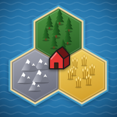

Wähle ein Spiel. Beide laufen direkt im Browser, auch auf dem Handy.

Besiedle die Insel, handle mit Rohstoffen und sammle als Erster genug Siegpunkte.
Kartenduell mit Spirits, Brave-Fusionen und 3D-Hologrammen auf dem Spielfeld.